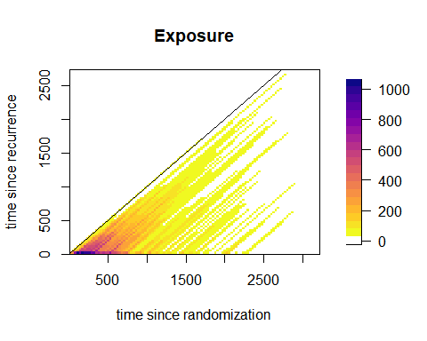

Disclaimer: the current version of the package and of this vignette is a work-in-progress! Details might change with future updates and this vignette will be updated consequently.
Introduction
This vignette focuses on the analysis of time-to-event data with two
time scales. We show how to use the functions of the package
TwoTimeScales with their different options. In particular
we show:
- how to bin data over the \((u,s)\)- or the \((t,s)\)-plane
- how to bin data when covariates are presents
- how to perform a grid search of the optimal couple of smoothing parameters
- how to plot the AIC or BIC grid
- how to perform a numerical optimization of the model
- how to estimate a model with covariates
However, this vignette does not deal with visualization of the estimated smooth hazard with two time scales. Visualization is the topic of the vignette Visualize hazards with two time scales. We assume that the reader of this vignette has some familiarity with the model, and with the basic functions of the package introduced in Introduction to TwoTimeScales. For a full exposition of the model, we refer to Carollo et al. (2023).
In the following, we once again analyse the dataset
reccolon2ts, which includes data on patients with
recurrence of colon cancer. The first part of this vignette deals with
the model without covariates, and the proportional hazards model for the
same analysis follows in the second part.
Hazard of death by time since randomization and time since recurrence
The two time variables are \(t\) = time since randomization and \(s\) = time since recurrence. Additionally, \(u\) = time at recurrence, is the fixed time at entry in the risk set recorded as number of days from randomization to recurrence. The analysis is performed over the \((u,s)\)-plane, so we need to bin the data over \(u\) and \(s\). We consider bins of width 30 days on both axes, and we obtain 77 bins on the \(u\) axis and \(91\) bins on the \(s\) axis.
dt2ts <- prepare_data(u = reccolon2ts$timer,
s_out = reccolon2ts$timesr,
events = reccolon2ts$status,
ds = 30, du = 30)
#> `s_in = NULL`. I will use `s_in = 0` for all observations.
#> `s_in = NULL`. I will use `s_in = 0` for all observations.
print(dt2ts)
#> An object of class 'data2ts'
#>
#> Data:
#> List of 2
#> $ bins :List of 6
#> $ bindata:List of 2
#> - attr(*, "class")= chr "data2ts"
#> NULL
#>
#> Range covered by the bins:
#> $bins_u
#> [1] 8 2288
#>
#> $bins_s
#> [1] 0 2730
#>
#>
#> Number of bins:
#> $nu
#> [1] 76
#>
#> $ns
#> [1] 91
#>
#>
#> Overview of the binned data:
#> [1] "Total exposure time: 246018"
#>
#> [1] "Total number of events: 409"Here, we do not use the artificially created left truncated entry times on the \(s\) axis, therefore the function returns a message informing the user that an entry time of 0 is imputed to all observations.
After having prepared the data we can estimate the model. In the
analysis presented in Carollo et al.
(2023), we build 23 \(B\)-splines over each of the two
dimensions, for a total of 529 \(\alpha\) parameters. The optimal smoothing
parameters are chosen by numerical optimization of the AIC of the model
as function of the smoothing parameters. We use cubic \(B\)-splines bases and a second order
penalty. Here we explicitly specify all these parameters, even though
some of them are the default options. The last argument
control_algorithm is a list of optional controls for the
iterative processes. With the option monitor_ev = TRUE, we
ask the function to return mid-level evaluations of the model, that is
it will return AIC’s value for each couple of \(\log_{10}\varrho_u\) and \(\log_{10}\varrho_s\) evaluated.
mod1 <- fit2ts(data2ts = dt2ts,
Bbases_spec = list(bdeg = 3,
nseg_s = 20,
min_s = 0,
max_s = 2730,
nseg_u = 20,
min_u = 0,
max_u = 2300),
pord = 2,
optim_method = "ucminf",
optim_criterion = "aic",
control_algorithm = list(monitor_ev = T))
#> [1] "AIC for model with log_10(rho_u) = 0 and log_10(rho_s) = 0 : 1258.91940290112"
#> [1] "AIC for model with log_10(rho_u) = 1e-08 and log_10(rho_s) = 0 : 1258.91940280297"
#> [1] "AIC for model with log_10(rho_u) = 0 and log_10(rho_s) = 1e-08 : 1258.9194028486"
#> [1] "AIC for model with log_10(rho_u) = 0.881710980064571 and log_10(rho_s) = 0.471789940157241 : 1251.68397813386"
#> [1] "AIC for model with log_10(rho_u) = 0.881711871775551 and log_10(rho_s) = 0.471789940157241 : 1251.68397467276"
#> [1] "AIC for model with log_10(rho_u) = 0.881710980064571 and log_10(rho_s) = 0.471790421947181 : 1251.68397779942"
#> [1] "AIC for model with log_10(rho_u) = 1.6694032153475 and log_10(rho_s) = -0.144279002798811 : 1250.56131531659"
#> [1] "AIC for model with log_10(rho_u) = 1.66940489475071 and log_10(rho_s) = -0.144279002798811 : 1250.56131184372"
#> [1] "AIC for model with log_10(rho_u) = 1.6694032153475 and log_10(rho_s) = -0.144278848519808 : 1250.56131496537"
#> [1] "AIC for model with log_10(rho_u) = 2.10300715107393 and log_10(rho_s) = 0.209584486073733 : 1249.43603473856"
#> [1] "AIC for model with log_10(rho_u) = 2.10300926408109 and log_10(rho_s) = 0.209584486073733 : 1249.43603319641"
#> [1] "AIC for model with log_10(rho_u) = 2.10300715107393 and log_10(rho_s) = 0.209584705658219 : 1249.43603459365"
#> [1] "AIC for model with log_10(rho_u) = 2.35534805284192 and log_10(rho_s) = 0.340926421331719 : 1249.30054366419"
#> [1] "AIC for model with log_10(rho_u) = 2.35535041818997 and log_10(rho_s) = 0.340926421331719 : 1249.30054349323"
#> [1] "AIC for model with log_10(rho_u) = 2.35534805284192 and log_10(rho_s) = 0.34092677225814 : 1249.30054371139"
#> [1] "AIC for model with log_10(rho_u) = 2.40269944095529 and log_10(rho_s) = 0.302454776342888 : 1249.29691150976"
#> [1] "AIC for model with log_10(rho_u) = 2.40270185365473 and log_10(rho_s) = 0.302454776342888 : 1249.29691150232"
#> [1] "AIC for model with log_10(rho_u) = 2.40269944095529 and log_10(rho_s) = 0.302455088797665 : 1249.29691149638"
#> [1] "AIC for model with log_10(rho_u) = 2.40138914932614 and log_10(rho_s) = 0.310411392992425 : 1249.29674716572"
#> [1] "AIC for model with log_10(rho_u) = 2.40139156071529 and log_10(rho_s) = 0.310411392992425 : 1249.29674716169"
#> [1] "AIC for model with log_10(rho_u) = 2.40138914932614 and log_10(rho_s) = 0.310411713403818 : 1249.29674716601"
#> [1] "AIC for model with log_10(rho_u) = 2.402274206628 and log_10(rho_s) = 0.310165350431645 : 1249.29674658493"
#> [1] "AIC for model with log_10(rho_u) = 2.40227661890221 and log_10(rho_s) = 0.310165350431645 : 1249.2967465845"
#> [1] "AIC for model with log_10(rho_u) = 2.402274206628 and log_10(rho_s) = 0.310165670596995 : 1249.29674658378"
#> [1] "AIC for model with log_10(rho_u) = 2.40273831852156 and log_10(rho_s) = 0.310479203847903 : 1249.29674700955"
#> [1] "AIC for model with log_10(rho_u) = 2.40274073125988 and log_10(rho_s) = 0.310479203847903 : 1249.2967470132"
#> [1] "AIC for model with log_10(rho_u) = 2.40273831852156 and log_10(rho_s) = 0.310479524327107 : 1249.2967470102"
#> [1] "AIC for model with log_10(rho_u) = 2.40244624348368 and log_10(rho_s) = 0.310281689520613 : 1249.29674661182"
#> [1] "AIC for model with log_10(rho_u) = 2.40244865592992 and log_10(rho_s) = 0.310281689520613 : 1249.29674661264"
#> [1] "AIC for model with log_10(rho_u) = 2.40244624348368 and log_10(rho_s) = 0.310282009802303 : 1249.2967466121"
#> [1] "AIC for model with log_10(rho_u) = 2.40235538685774 and log_10(rho_s) = 0.310220248168138 : 1249.29674657864"
#> [1] "AIC for model with log_10(rho_u) = 2.40235779921313 and log_10(rho_s) = 0.310220248168138 : 1249.29674657875"
#> [1] "AIC for model with log_10(rho_u) = 2.40235538685774 and log_10(rho_s) = 0.310220568388386 : 1249.29674657768"
#> [1] "AIC for model with log_10(rho_u) = 2.40231603419219 and log_10(rho_s) = 0.310193636118991 : 1249.29674657613"
#> [1] "AIC for model with log_10(rho_u) = 2.40231844650823 and log_10(rho_s) = 0.310193636118991 : 1249.29674657673"
#> [1] "AIC for model with log_10(rho_u) = 2.40231603419219 and log_10(rho_s) = 0.310193956312627 : 1249.29674657577"
#> [1] "AIC for model with log_10(rho_u) = 2.40210729307251 and log_10(rho_s) = 0.310237949544861 : 1249.29674656504"
#> [1] "AIC for model with log_10(rho_u) = 2.4021097051798 and log_10(rho_s) = 0.310237949544861 : 1249.29674656507"
#> [1] "AIC for model with log_10(rho_u) = 2.40210729307251 and log_10(rho_s) = 0.31023826978281 : 1249.29674656455"
#> [1] "AIC for model with log_10(rho_u) = 2.40153058397294 and log_10(rho_s) = 0.310400514271832 : 1249.29674697423"
#> [1] "AIC for model with log_10(rho_u) = 2.40153299550353 and log_10(rho_s) = 0.310400514271832 : 1249.2967469706"
#> [1] "AIC for model with log_10(rho_u) = 2.40153058397294 and log_10(rho_s) = 0.310400834672347 : 1249.29674697381"
#> [1] "AIC for model with log_10(rho_u) = 2.40199652395517 and log_10(rho_s) = 0.310269173521265 : 1249.2967465908"
#> [1] "AIC for model with log_10(rho_u) = 2.4019989359517 and log_10(rho_s) = 0.310269173521265 : 1249.29674659078"
#> [1] "AIC for model with log_10(rho_u) = 2.40199652395517 and log_10(rho_s) = 0.310269493790438 : 1249.29674659131"
#> [1] "AIC for model with log_10(rho_u) = 2.40207098725249 and log_10(rho_s) = 0.310248183553173 : 1249.29674657064"
#> [1] "AIC for model with log_10(rho_u) = 2.40207339932348 and log_10(rho_s) = 0.310248183553173 : 1249.29674657019"
#> [1] "AIC for model with log_10(rho_u) = 2.40207098725249 and log_10(rho_s) = 0.310248503801356 : 1249.29674657094"
#> [1] "AIC for model with log_10(rho_u) = 2.40209382988775 and log_10(rho_s) = 0.310241744593278 : 1249.29674656632"
#> [1] "AIC for model with log_10(rho_u) = 2.40209624198158 and log_10(rho_s) = 0.310241744593278 : 1249.29674656637"
#> [1] "AIC for model with log_10(rho_u) = 2.40209382988775 and log_10(rho_s) = 0.310242064835023 : 1249.29674656641"
#> [1] "AIC for model with log_10(rho_u) = 2.40210174898562 and log_10(rho_s) = 0.310239512330974 : 1249.29674656516"
#> [1] "AIC for model with log_10(rho_u) = 2.40210416108737 and log_10(rho_s) = 0.310239512330974 : 1249.29674656497"
#> [1] "AIC for model with log_10(rho_u) = 2.40210174898562 and log_10(rho_s) = 0.310239832570487 : 1249.29674656552"The object returned by fit2ts() is of class
"haz2ts". The optimal smoothing parameters are \(\varrho_u = 10^{2.4}\) and \(\varrho_s=10^{0.3}\), and the effective
dimension of the model is 11.1.
str(mod1)
#> List of 3
#> $ optimal_model :List of 10
#> ..$ Alpha : num [1:23, 1:23] -5.96 -6.19 -6.42 -6.65 -6.87 ...
#> ..$ Cov_Alpha: num [1:529, 1:529] 0.381 0.314 0.25 0.191 0.138 ...
#> ..$ deviance : num 1227
#> ..$ Eta : num [1:76, 1:91] -5.92 -5.98 -6.04 -6.1 -6.16 ...
#> ..$ H : num [1:76, 1:91] 0.0241 0.0237 0.0439 0.0545 0.0275 ...
#> ..$ ed : num 11.1
#> ..$ aic : num 1249
#> ..$ bic : num 1326
#> ..$ Bbases :List of 2
#> .. ..$ Bu: num [1:76, 1:23] 8.53e-02 2.61e-02 3.59e-03 8.77e-07 0.00 ...
#> .. .. ..- attr(*, "x")= num [1:76] 23 53 83 113 143 173 203 233 263 293 ...
#> .. .. ..- attr(*, "xl")= num 0
#> .. .. ..- attr(*, "xr")= num 2300
#> .. .. ..- attr(*, "nseg")= num 20
#> .. .. ..- attr(*, "bdeg")= num 3
#> .. .. ..- attr(*, "type")= chr "bbase"
#> .. ..$ Bs: num [1:91, 1:23] 1.18e-01 5.02e-02 1.52e-02 2.05e-03 2.21e-07 ...
#> .. .. ..- attr(*, "x")= num [1:91] 15 45 75 105 135 165 195 225 255 285 ...
#> .. .. ..- attr(*, "xl")= num 0
#> .. .. ..- attr(*, "xr")= num 2730
#> .. .. ..- attr(*, "nseg")= num 20
#> .. .. ..- attr(*, "bdeg")= num 3
#> .. .. ..- attr(*, "type")= chr "bbase"
#> ..$ nevents : num 409
#> $ optimal_logrho: num [1:2] 2.4 0.31
#> $ P_optim : num [1:529, 1:529] 254 -505 252 0 0 ...
#> - attr(*, "class")= chr "haz2ts"We can change the optimization criterion to BIC, and compare the results in terms of smoothing parameters and effective dimensions:
mod2 <- fit2ts(data2ts = dt2ts,
Bbases_spec = list(bdeg = 3,
nseg_s = 20,
min_s = 0,
max_s = 2730,
nseg_u = 20,
min_u = 0,
max_u = 2300),
pord = 2,
optim_method = "ucminf",
optim_criterion = "bic")
#> Warning in GLAM_2d_no_covariates(R = R, Y = Y, Bu = Bu, Bs = Bs, Wprior =
#> Wprior, : Max number of iterations 20 reached but the algorithm did not
#> converge.
#> Warning in GLAM_2d_no_covariates(R = R, Y = Y, Bu = Bu, Bs = Bs, Wprior =
#> Wprior, : Max number of iterations 20 reached but the algorithm did not
#> converge.
#> Warning in GLAM_2d_no_covariates(R = R, Y = Y, Bu = Bu, Bs = Bs, Wprior =
#> Wprior, : Max number of iterations 20 reached but the algorithm did not
#> converge.
mod2$optimal_logrho
#> [1] 6.323086 1.623891
mod2$optimal_model$ed
#> [1] 5.332391As expected, choosing BIC as optimization criterion results in larger smoothing parameters and a smaller effective dimension, as BIC penalizes model complexity more strongly than AIC. Finally, we see how to use the grid search method to select the optimal pair of smoothing parameters and at the same time to produce plots of the AIC and BIC values of the grid of \(\log_{10}\) values of both smoothing parameters.
To do so, we divide the graphical window in two parts, and we specify that the plots of the AIC and BIC are required, plus additional options:
par(mfrow = c(1,2))
mod3 <- fit2ts(data2ts = dt2ts,
Bbases_spec = list(bdeg = 3,
nseg_s = 20,
min_s = 0,
max_s = 2730,
nseg_u = 20,
min_u = 0,
max_u = 2300),
optim_method = "grid_search",
optim_criterion = "aic",
lrho = list(seq(-1, 3, by=.2),
seq(-1, 3, by = .2)),
par_gridsearch = list(
plot_aic = T,
plot_bic = T,
mark_optimal = T,
plot_contour = T
))
Alternatively, we can ask the function to return the matrices of AIC and/or BIC values as part of the fitted object and then plot them separately (here not shown).
PH regression for the colon cancer data
We first show how to prepare the data for the analysis with
covariates, then we see that there is no need to modify the estimation
command, as the function fit2ts() automatically recognizes
that the data object includes a covariates’ matrix and then it correctly
estimates a GLAM PH model.
To prepare the covariates’ matrix, we need to pass a matrix with the
individual values of the covariates, to the argument covs
in prepare_data. We do so by subsetting the dataset and
selecting the desired covariates.
covs <- subset(reccolon2ts, select = c("rx", "sex", "adhere", "obstruct", "node4"))
dt2ts_cov <- prepare_data(u = reccolon2ts$timer,
s_out = reccolon2ts$timesr,
events = reccolon2ts$status,
ds = 30,
individual = TRUE,
covs = covs)
#> `s_in = NULL`. I will use `s_in = 0` for all observations.
#> `s_in = NULL`. I will use `s_in = 0` for all observations.
str(dt2ts_cov)
#> List of 2
#> $ bins :List of 6
#> ..$ bins_u: num [1:77] 8 38 68 98 128 158 188 218 248 278 ...
#> ..$ midu : num [1:76] 23 53 83 113 143 173 203 233 263 293 ...
#> ..$ nu : int 76
#> ..$ bins_s: num [1:92] 0 30 60 90 120 150 180 210 240 270 ...
#> ..$ mids : num [1:91] 15 45 75 105 135 165 195 225 255 285 ...
#> ..$ ns : int 91
#> $ bindata:List of 3
#> ..$ R: num [1:76, 1:91, 1:461] 0 0 0 0 0 0 0 0 0 0 ...
#> ..$ Y: num [1:76, 1:91, 1:461] 0 0 0 0 0 0 0 0 0 0 ...
#> ..$ Z: num [1:461, 1:6] 0 0 0 0 0 1 0 1 0 1 ...
#> .. ..- attr(*, "dimnames")=List of 2
#> .. .. ..$ : NULL
#> .. .. ..$ : chr [1:6] "Lev" "Lev+5FU" "male" "adhere" ...
#> - attr(*, "class")= chr "data2ts"Then, we pass the object d2ts_cov to
fit2ts() with the same arguments as before. We do not show
the fitted object here, but encourage the readers to run the code on
their console.
mod_cov <- fit2ts(data2ts = dt2ts_cov,
Bbases_spec = list(bdeg = 3,
nseg_s = 20,
min_s = 0,
max_s = 2730,
nseg_u = 20,
min_u = 0,
max_u = 2300),
pord = 2,
optim_method = "ucminf",
optim_criterion = "aic")Prepare the data over the Lexis diagram
It is, in principle, possible to prepare the data over the \((t,s)\)-plane. To do so, we pass as
arguments to the function prepare_data() a vector of entry
times and a vector of exit times over the \(t\) axis, rather than the vector of entry
times \(u\). From the image plot of the
exposure times, we can see how the data are only present in the lower
half-plane where \(t\ge s\).
dt2tsLex <- prepare_data(t_in = reccolon2ts$timer,
t_out = reccolon2ts$timedc,
s_out = reccolon2ts$timesr,
events = reccolon2ts$status,
ds = 30, dt = 30)
#> `s_in = NULL`. I will use `s_in = 0` for all observations.
#> `s_in = NULL`. I will use `s_in = 0` for all observations.
#> NOTE: entry.status has been set to 0 for all.
fields::image.plot(dt2tsLex$bins$midt,
dt2tsLex$bins$mids,
dt2tsLex$bindata$R,
main = "Exposure",
xlab = "time since randomization",
ylab = "time since recurrence",
col = c("white", rev(viridis::plasma(20))))
abline(a=0,b=1)
box()
Note: estimation over the \((t,s)\)-plane with the same model is theoretically possible, but special care is needed to deal with the larger areas without data support (especially those where \(t < s\)). Comparison with the estimation over the \((u,s)\)-plane is currently under investigation. A future version of the package will include options for estimation over the \((t,s)\)-plane.